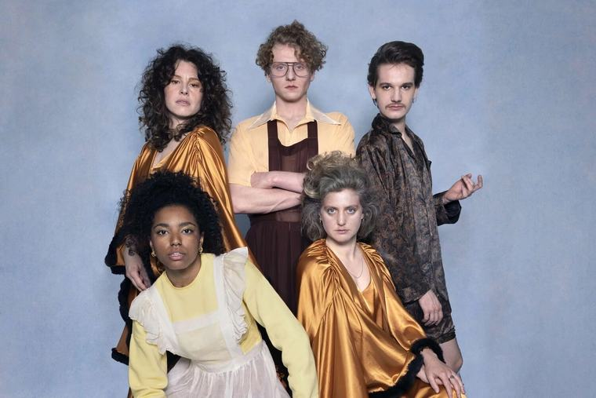

Fünf, sechs, alles Flex
Een muzikale komedie naar Frühere Verhältnisse van de Oostenrijkse komedieschrijver Johann Nestroy. Vastgoedondernemer Scheitermann en professorsdochter Josephine zoeken allebei een nieuwe persoonlijke assistent voor hun losse handjes en wisselende buien. Een overdaad aan taal, muziek en autotune over de valse, ongelijke wereld van rijkdom en schijn.

Credits
- regie
- Sarah Moeremans, Koen van Seuren
- tekstbewerking
- Sarah Moeremans, Gillis Biesheuvel, Joep van der Geest
- productie
- Het Zuidelijk Toneel, Club Gewalt
Speellijst
- 23/06/2023 · première